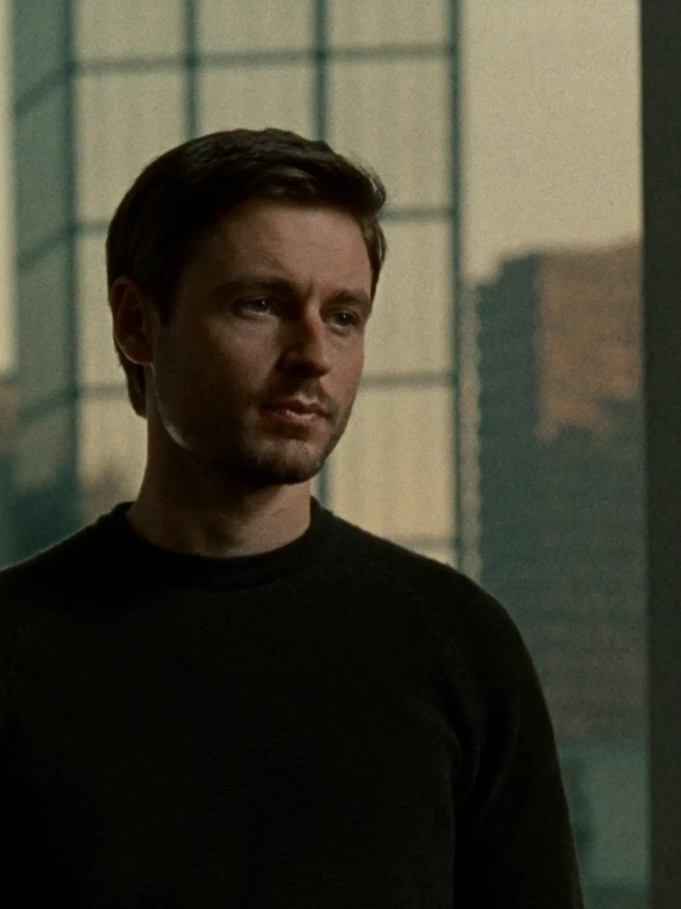
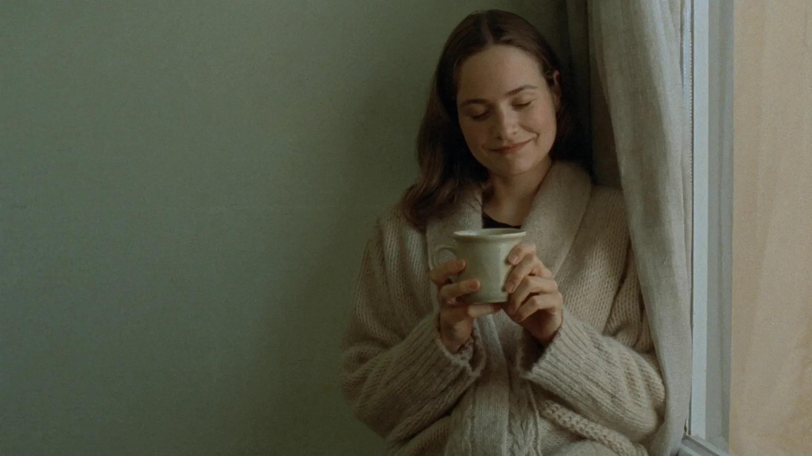
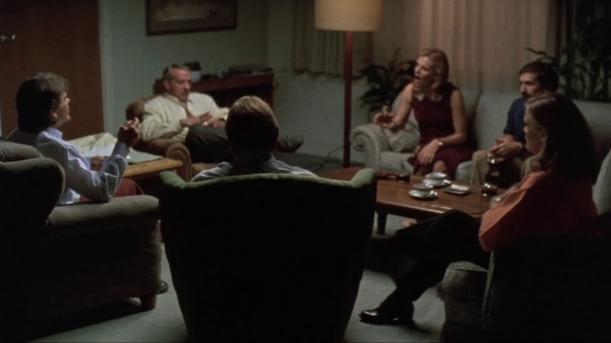
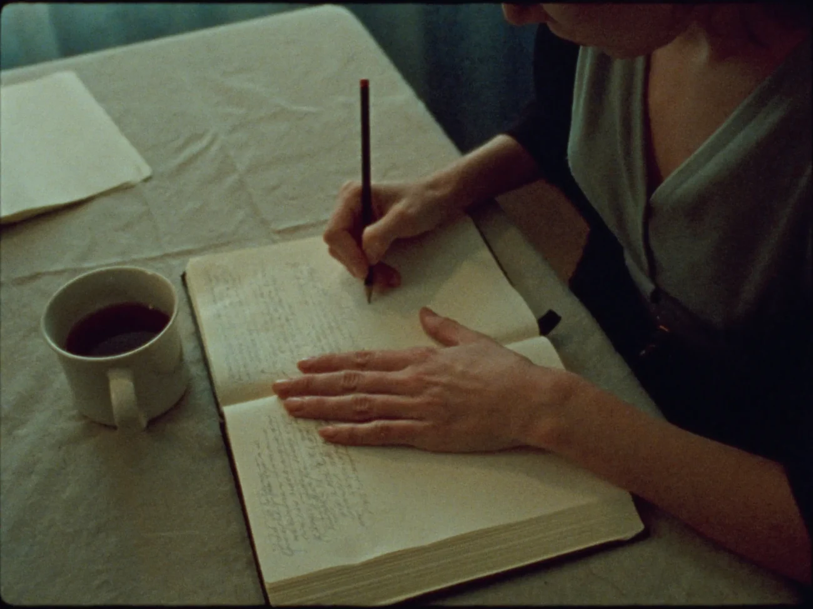
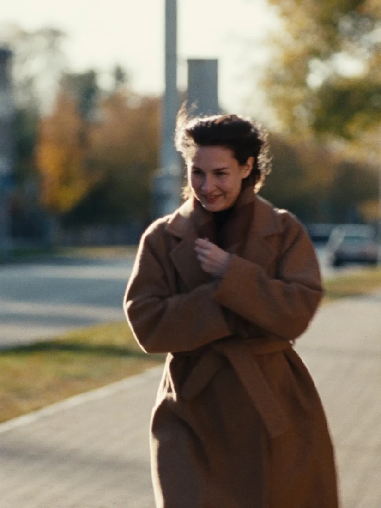
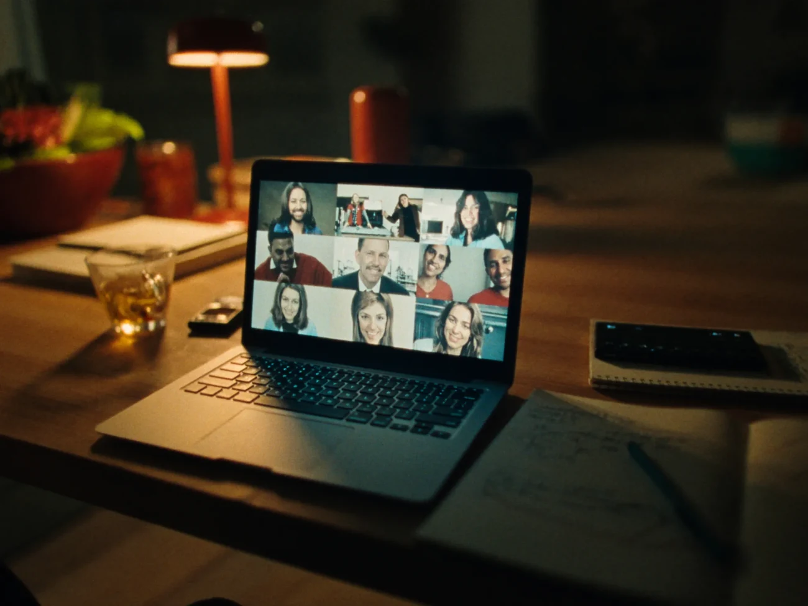

Из тупика
Для предпринимателей, которые упёрлись и не понимают, куда дальше. Обычно хватает 2–5 встреч.

Закрытый клуб для тех, кто уже разобрался с прошлым и хочет жить дальше — спокойно и с удовольствием
Клуб не для кризиса. Он для того момента, когда самое тяжёлое уже позади, а радоваться жизни так и не получается.
В «Дальше» учимся замечать свои схемы раньше, чем они начинают тобой рулить. И делаем это среди своих: взрослых людей, которые тоже работают над собой без слёз и драмы.
Как устроен клуб
Группа небольшая и закрытая. Состав не меняется весь месяц, поэтому через пару встреч здесь можно говорить по-настоящему. Надежда ведёт, держит рамку и даёт инструменты из КПТ и гештальта.

Встреча раз в неделю по понедельникам вечером, 90 минут в Zoom. Камеры включены, записи нет.
Не больше восьми человек. Новые приходят только в начале месяца.
Между встречами — дневник наблюдений: пять минут вечером, чтобы поймать свою схему в моменте.
Одна тема на месяц. Чат группы, где Надежда отвечает на вопросы по будням.
Декабрь
Как подвести год и не устроить себе суд. Что забрать в новый, а что оставить.
Январь
Отличаем свои желания от чужих ожиданий и ставим цели, которые не бросишь в феврале.
Февраль
Как быть рядом с людьми и не терять себя: границы, просьбы, честные разговоры.
Попробуй прямо сейчас
Это главная практика клуба. Четыре вопроса про один момент дня. Через неделю становится видно, что повторяется, — и появляется выбор.

Записи остаются только в твоём браузере. В клубе такие записи разбираем вместе, и за месяц становится видно свою схему целиком.
Ведёт
«Ко мне приходят как к психологу, а уходят как от коуча»
Больше десяти лет я работала в бизнесе и в банке. В 35 случился кризис, я уволилась и пошла разбираться с собой. Прошла личную терапию и поступила учиться на психолога.
На практике поняла, что эта работа меня заряжает. Сейчас веду клиентов индивидуально и собираю клуб для тех, с кем мне самой интересно: взрослых, осознанных, которые хотят не только разобраться, но и жить.
Если нужно один на один

Для предпринимателей, которые упёрлись и не понимают, куда дальше. Обычно хватает 2–5 встреч.

Когда после разрыва не ешь, не спишь и не понимаешь, как жить. Восстанавливаем опоры шаг за шагом.
Работа с тревогой, самооценкой, отношениями. Если есть диагноз и психиатр — поддержка между приёмами в подходе КПТ.
Участие
цена фиксируется на 3 месяца, потом 5 900 ₽
с декабрьского набора
вместо 10 900 ₽ по отдельности
Одно место в каждой группе — по донату. Для тех, кому сейчас правда нужно, а денег нет. Напиши Надежде честно, она ответит.
Можно, если ты не в кризисе и тебе интересно разбираться в себе. Перед стартом будет короткий созвон с Надеждой, на нём и поймёте, подходит ли тебе группа.
Это нормально. Говорить можно ровно столько, сколько хочется. Правила группы: что прозвучало на встрече, остаётся на встрече, записей нет.
Ничего страшного. В чате будет короткий итог встречи и практика на неделю.
Да. Оплата помесячная, без автосписаний. Не продлил — значит, вышел.
Да, клуб для всех взрослых. Группы смешанные.

Открытая встреча клуба — 60 минут с Надеждой и такими же людьми, как ты. Бесплатно. Поймёшь, твоё или нет, и только потом решишь.